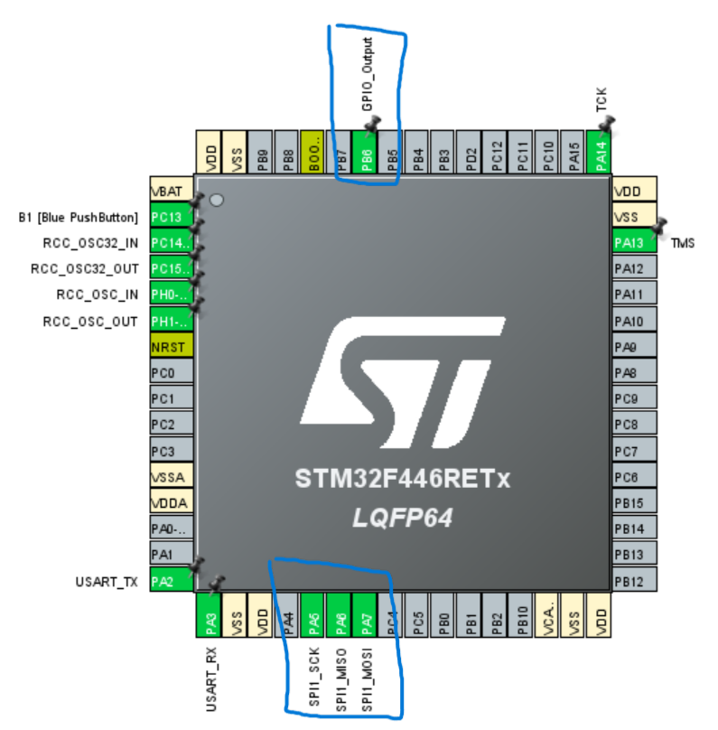
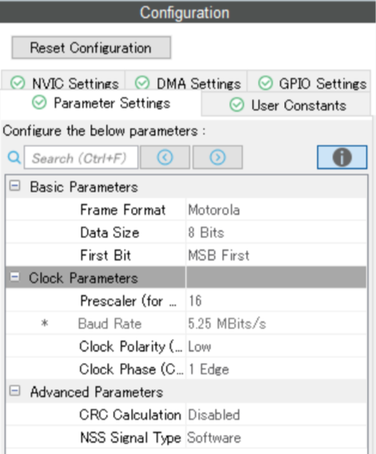
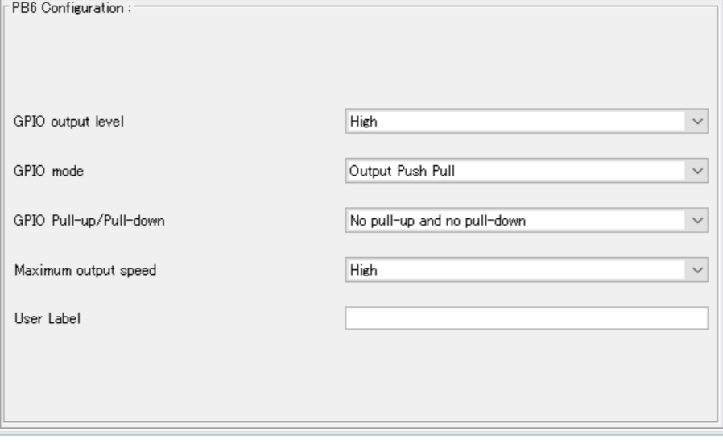

STM32資料 応用編3
SPI通信でセンサーと通信をしてみよう
今回は、SPI通信という方法を使ってICM45686のWIAレジスタを読み取ってみよう
今回やること
作業の流れ
- ピンを割り当てる
- wrapper.cppにコードを書き込む
- センサーとSTM32をつなぐ
- TeraTermでデータを受信する
SPI通信とは
I2Cのようにセンサーと通信する時に使う通信形式の1つ
送受信の2本の通信線と、デバイス選択の信号線を使うことで高速通信を実現している
I2CとSPIの違い
簡単にI2CとSPIの違いを表にまとめてみた
例外は色々あるので、この通りにならないこともしばしばある
速度が早くいいことばかりに見えるが、デバイスごとに信号線が必要になるので
センターの数だけ配線が複雑になってしまうというデメリットを抱えている
| 要素 | I2C通信 | SPI通信 |
|---|---|---|
| 通信線 | 1本(SDA) | 2本(MISO, MOSI) |
| 信号線 | 1本(SCL) | 1本(SCK) |
| デバイス選択 | I2Cアドレス（プログラム） | 信号線(CS, ハード) |
| 通信速度（このセンサーの最大値） | 1Mbps | 24Mbps |
デバイス選択(CS)とは
SPI通信のCSピンに繋がる信号線は、選択時に0v、非選択時には3.3vに保っておく必要がある
そこでGPIOを使用し、通信直前にRESET、通信後にSETをすることでこの動作を実装できる
ピンの割り当て
ピンの設定
今回はSPI1を使うので図のようにSPIのピンを3つとGPIOを設定しよう
詳細設定
SPI1の設定を開き、BaudRateが1~5Mbits程度になるようにPrescalerの値を変更しよう
System CoreからGPIOを選択し、PB6の設定を変更しよう
回路
SPI通信は配線が増えてくるので、5VとGNDだけは間違えないように気を付けよう
ICM45686のピン配置について
今回は実際のデータシートと同じような形式で配線を紹介する
I2C通信で線をつないだ場所には20個のピンがあり、正面から見たときにこのように名前がついている
実際はこの図と回路図を見ながら配線をつないでいくことになる
| Pin2 | Pin4(CS) | (中略) | Pin14 | Pin16(SCLK) | Pin18(SDIO) | Pin20(SDO) |
|---|---|---|---|---|---|---|
| Pin1 | Pin3 | (中略) | Pin13(GND) | Pin15 | Pin17 | Pin19(5v) |
STM32との接続
先ほど割り当てたSTMのピンとICMのピンを図のようにつなげよう
| 役割 | STM32 | ICM45686 |
|---|---|---|
| 5v | 5v | Pin19 |
| GND | GND | Pin13 |
| データ(STM→ICM) | MOSI(D12) | Pin20 |
| データ(ICM→STM) | MISO(D11) | Pin18 |
| クロック | SCK(D13) | Pin16 |
| デバイス選択 | GPIO(D10) | Pin4 |
プログラム
SPI通信にも読み取りの関数があるので、紹介する
SPI通信で読み取りをする関数
SPI通信では書き込み（レジスタアドレスの送信）と読み取りを同時に行うことができるため、このような関数名になっている
関数
HAL_SPI_TransmitReceive(&hspix, TxBuffer, RxBuffer, Size, TimeOut);この関数の引数
| 引数名 | 変数型 | 内容 |
|---|---|---|
| &hi2cx | SPI_HandleTypeDef* | SPIのポインタ（xはSPIの番号） |
| TxBuffer | uint8_t* | 送信データ（ポインタ） |
| RxBuffer | uint8_t* | 受受信データ（ポインタ） |
| Size | uint16_t | 送信データサイズ |
| TimeOut | uint32_t | 最大実行時間(超えたら諦める) |
データの書き込みと読み取りの流れ
詳しいことまで知る必要はないが、例を出しつつ簡単に紹介する
読み取りのやりかた
SPI通信での読み取りでは、まずレジスタアドレスの8桁目を1にする
これはレジスタアドレスの後の| 0x80;という操作で実装している
その後RxBufferの2番目の要素に読み取った値が入る仕組みになっている
uint8_t tx_buffer[2] = {};
uint8_t rx_buffer[2] = {};
tx_buffer[0] = reg_addr | 0x80;//読み取りたいレジスタのアドレス
tx_buffer[1] = 0x00;//からのデータ
//CSピンをLOWにする(通信開始)
HAL_GPIO_WritePin(GPIOB, GPIO_PIN_6, GPIO_PIN_RESET);
//アドレスの送信とデータの受信
HAL_SPI_TransmitReceive(&hspi1, tx_buffer, rx_buffer, 2, 1000);
//CSピンをHIGHにする(通信終了)
HAL_GPIO_WritePin(GPIOB, GPIO_PIN_6, GPIO_PIN_SET);
//受信したデータを取得(2番目の要素に入る)
uint8_t ReadValue = RxBuffer[1]読み取り関数
このような長いかつ、繰り返すプログラムは関数にすると使いやすい
複数バイトの読み取りのために、レジスタアドレスと受信したデータを格納する配列の要素のインクリメントをしている
Read(uint8_t reg_addr, uint8_t *data, uint8_t len){
uint8_t tx_buffer[2] = {};
uint8_t rx_buffer[2] = {};
//読み取るレジスタアドレスの数だけ繰り返す
for(uint8_t i=0; i < len; i++){
tx_buffer[0] = (reg_addr + i) | 0x80;//読み取りたいレジスタのアドレス
tx_buffer[1] = 0x00;//からのデータ
//CSピンをLOWにする(通信開始)
HAL_GPIO_WritePin(GPIOB, GPIO_PIN_6, GPIO_PIN_RESET);
//アドレスの送信とデータの受信
HAL_SPI_TransmitReceive(&hspi1, tx_buffer, rx_buffer, 2, 1000);
//CSピンをHIGHにする(通信終了)
HAL_GPIO_WritePin(GPIOB, GPIO_PIN_6, GPIO_PIN_SET);
//受信したデータを取得(2番目の要素に入る)
data[i] = rx_buffer[1]
}
}サンプルコード
実際にWIAをするためのコードを書いてみよう
上で紹介した読み取りのコードをvoid init();の前にコピペして、この関数とusartを使ってWIAの値をPCに送ってみよう
I2Cの時と同様に0xE9(233)が帰ってきたら成功
使用するレジスタ
| レジスタ名 | レジスタアドレス | 内容 | 値 |
|---|---|---|---|
| WIA | 0x72 | 通信チェック用 | 読み取り専用(0xE9が返ってくる) |
終わりに
次回はSPI通信でセンサーデータを読み取ってみよう